PASS · strict calibration gate
Geometry uses foreground component bounds. Typography uses the documented metric-calibrated Arial Narrow fallback; glyph rasterization remains platform-adapted. Browser screenshots are generated by the exact 4.4.0 package at DPR 1.
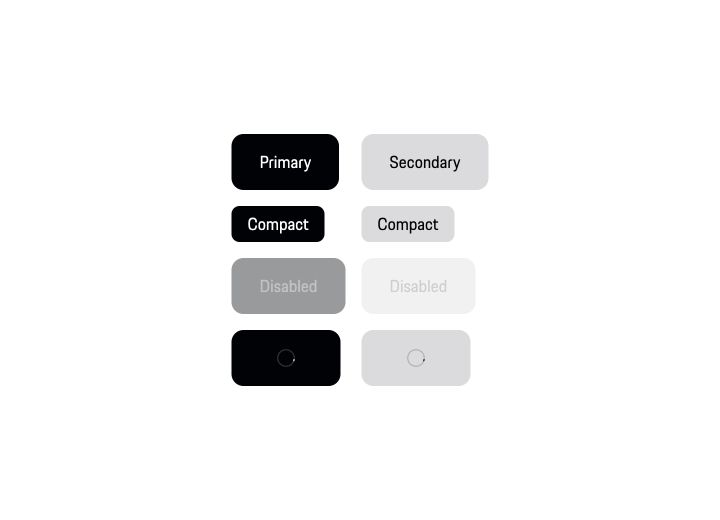
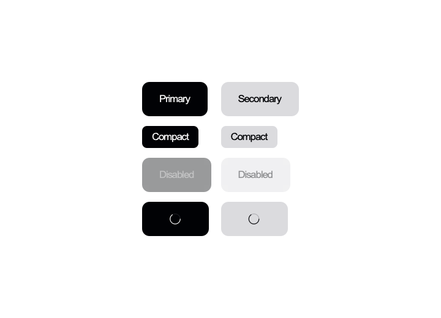
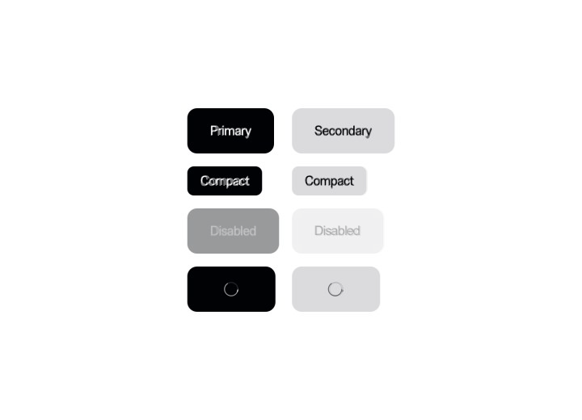
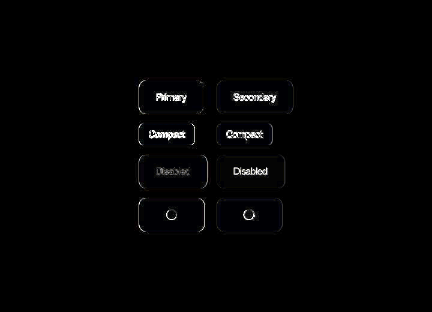
pixelMask=0.97603 pixel=0.99605 meanDelta=1.008
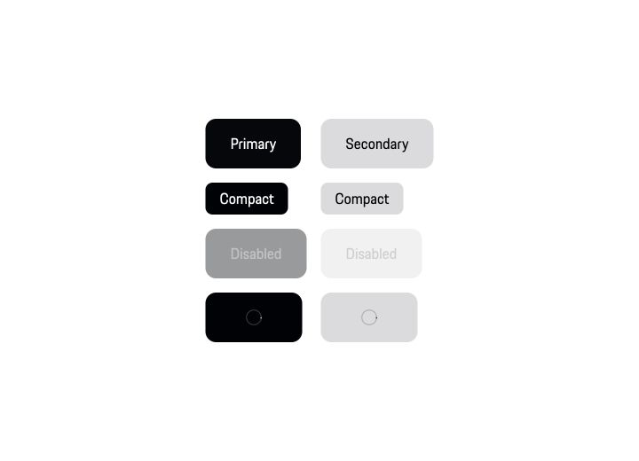
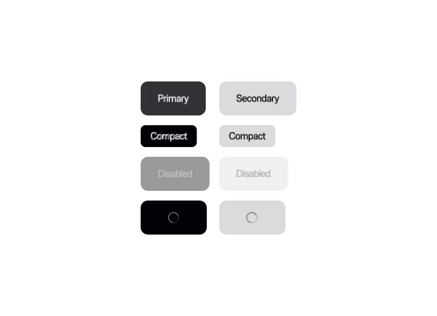
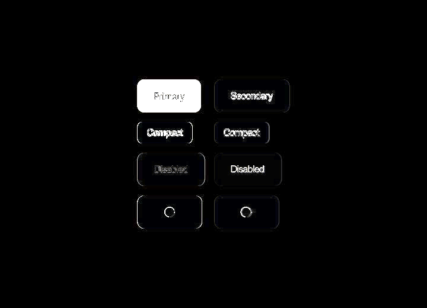
pixelMask=0.97591 pixel=0.99121 meanDelta=2.242
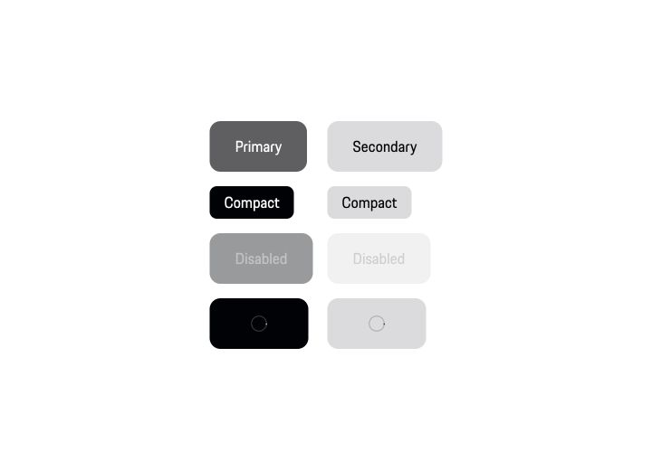
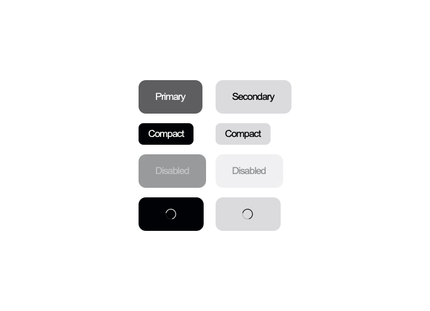
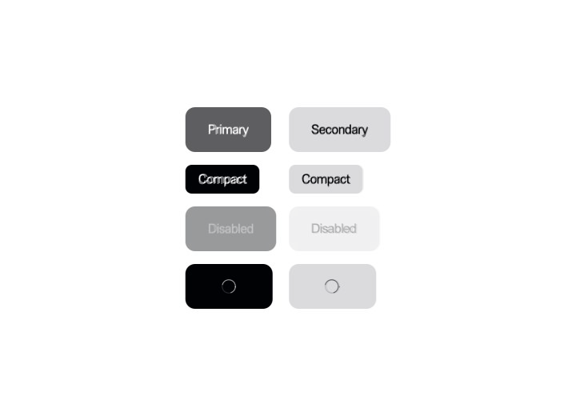
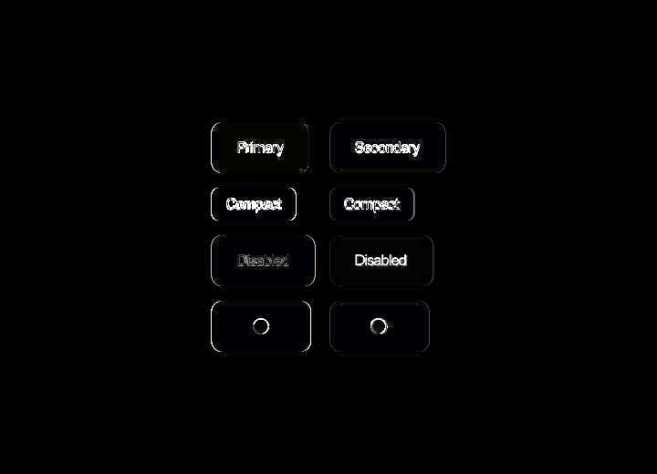
pixelMask=0.97597 pixel=0.99626 meanDelta=0.954
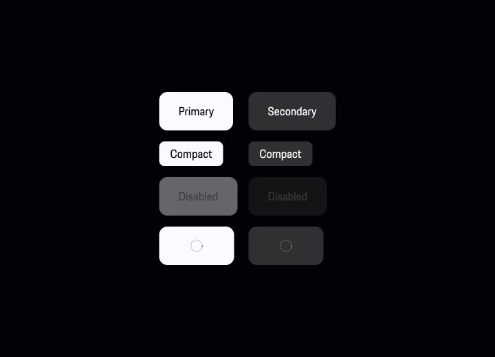
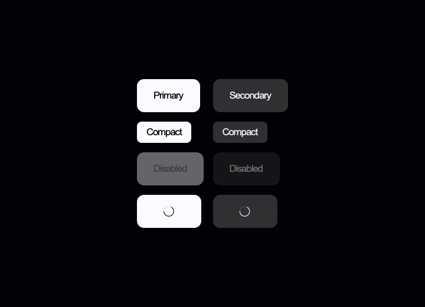
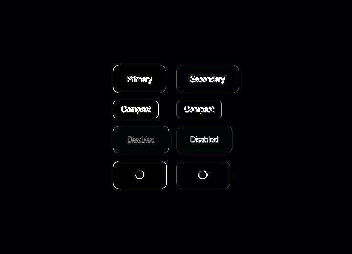
pixelMask=0.97733 pixel=0.99503 meanDelta=1.269
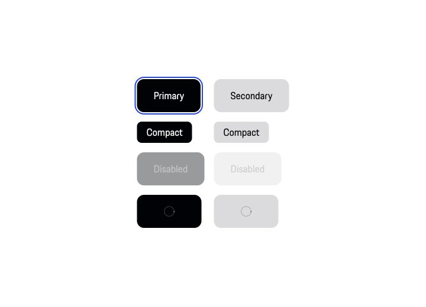
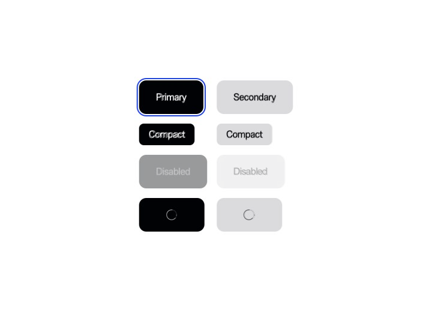
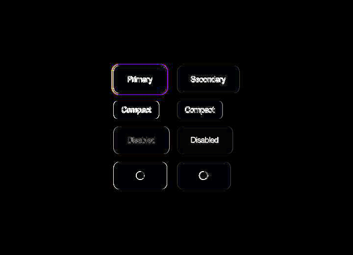
pixelMask=0.96243 pixel=0.99571 meanDelta=1.095
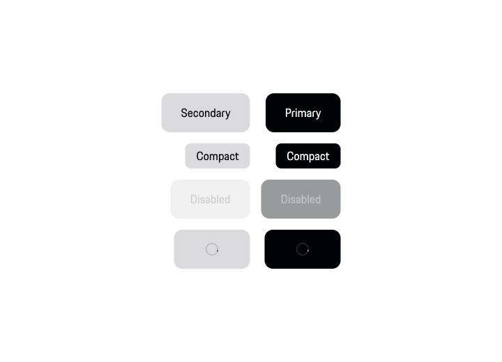
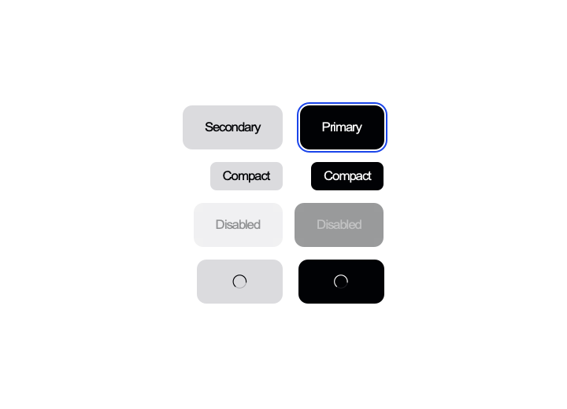
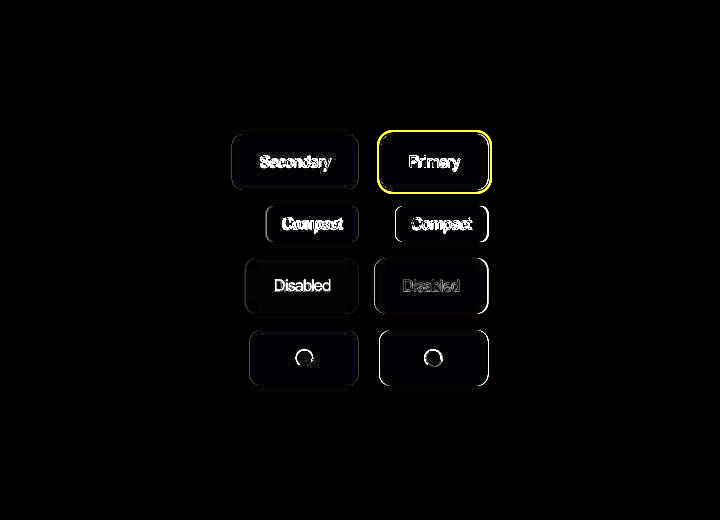
pixelMask=0.96137 pixel=0.99468 meanDelta=1.356